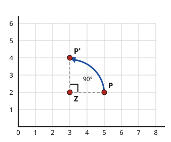

Verschieben und Drehen
Mit einem KI-Tutor lernen
Ein KI-Tutor erklärt dir diese Seite und hilft dir bei den Aufgaben. Wähl deinen Assistenten:
Mit Claude öffnen Mit ChatGPT öffnen Mit Mistral Vibe öffnen
Du nutzt dein eigenes Konto beim Anbieter. Der Assistent ist kein Angebot von lernapps.net: lernapps liefert nur Inhalte und Aufgaben. Die Wahl gilt für alle Seiten, nur auf diesem Gerät.
Der Schatz wandert
Nika und Jonas lesen den zehnten und letzten Hinweis ihrer Schatzkarte: Der Schatz wurde verschoben und gedreht. Du lernst hier, Punkte und Figuren zu verschieben und zu drehen und zu bestimmen, wo sie danach liegen. Du brauchst das Koordinatensystem von den Seiten davor. Beim Verschieben wird ein Punkt um einen Pfeil bewegt: Der Pfeil sagt, wie weit der Punkt nach rechts und wie weit er nach oben wandert. Beim Drehen wandert ein Punkt auf einem Kreisbogen um einen festen Punkt, den Drehpunkt. Der Punkt nach der Bewegung heißt Bildpunkt und bekommt einen Strich: P wird zu P'.
Aufgabe
Lösung
P'(5 | 3) richtige Antwort
Richtig. 2 + 3 = 5 nach rechts, 1 + 2 = 3 nach oben.
P'(3 | 5)
Du hast x und y des Ergebnisses vertauscht. P'(5 | 3) hat x = 5 und y = 3.
P'(5 | 1)
Du hast nur nach rechts verschoben. Der Pfeil geht auch 2 nach oben.
Beim Verschieben addierst du die Pfeilzahlen zu den Koordinaten, die erste zur x-Koordinate, die zweite zur y-Koordinate.
Verschieben und Drehen
 © CC-BY-4.0
© CC-BY-4.0Das Dreieck wird um den Pfeil 3 nach rechts und 2 nach oben verschoben.
Wenn du eine Figur an einen anderen Platz bringen willst, ohne sie zu verändern, verschiebst oder drehst du sie. Beim Verschieben wird jeder Punkt um denselben Pfeil bewegt. Die Bildfigur sieht genauso aus und steht nur an einer anderen Stelle. Beim Drehen brauchst du einen Drehpunkt und einen Winkel. Jeder Punkt wandert auf einem Kreis um den Drehpunkt. Der Uhrzeigersinn ist die Richtung, in die sich die Zeiger einer Uhr drehen. Gedreht wird hier gegen den Uhrzeigersinn.

© CC-BY-4.0P wird um Z um 90° gegen den Uhrzeigersinn gedreht.
- Drehpunkt
Der Drehpunkt ist der Punkt, um den sich eine Figur dreht. Er bleibt an seinem Platz.
Merke
Verschieben, Spiegeln und Drehen ändern die Form und die Größe der Figur nicht. Die Lage ändert sich. Beim Spiegeln steht die Bildfigur außerdem seitenverkehrt.
Ein Beispiel
P(5 | 2) um Z(3 | 2) drehen
P liegt 2 rechts von Z. Bei 90° gegen den Uhrzeigersinn liegt der Bildpunkt 2 über Z. Also P'(3 | 4).
Übung
Mit diesen Aufgaben prüfst du, ob du Punkte verschieben und drehen kannst.
Aufgabe Nr. 1
Aufgabe Nr. 1
Verschiebe den Punkt P(4 | 4) um den Pfeil 2 nach rechts und 1 nach oben. Setze dein Schiff auf den Bildpunkt.
Lösung
P(6 | 5): 4 + 2 = 6 und 4 + 1 = 5.
Aufgabe Nr. 1
Aufgabe Nr. 1
Drehe den Punkt P(5 | 2) um den Drehpunkt Z(3 | 2) um 90° gegen den Uhrzeigersinn. Setze dein Schiff auf den Bildpunkt.
Lösung
P(3 | 4): Eine Vierteldrehung gegen den Uhrzeigersinn um Z(3 | 2).
Aufgabe
Drei Beispielaufgaben, jede mit ihrer Lösung:
Aufgabe Nr. 1
Der Punkt P(4 | 1) wird um den Pfeil 3 nach rechts und 1 nach oben verschoben. Wie groß ist die y-Koordinate des Bildpunkts?
Tipp
Nach oben ändert sich die y-Koordinate. Wie weit geht der Pfeil nach oben?
Lösung
- Der Pfeil geht 1 nach oben, also ändert sich nur die y-Koordinate um 1.
- 1 + 1 = 2.
Richtige Antwort: 2
Aufgabe Nr. 2
Der Punkt P(1 | 1) wird um den Pfeil 3 nach rechts und 1 nach oben verschoben. Wie groß ist die y-Koordinate des Bildpunkts?
Tipp
Nach oben ändert sich die y-Koordinate. Wie weit geht der Pfeil nach oben?
Lösung
- Der Pfeil geht 1 nach oben, also ändert sich nur die y-Koordinate um 1.
- 1 + 1 = 2.
Richtige Antwort: 2
Aufgabe Nr. 3
Der Punkt P(3 | 2) wird um den Pfeil 2 nach rechts und 3 nach oben verschoben. Wie groß ist die y-Koordinate des Bildpunkts?
Tipp
Nach oben ändert sich die y-Koordinate. Wie weit geht der Pfeil nach oben?
Lösung
- Der Pfeil geht 3 nach oben, also ändert sich nur die y-Koordinate um 3.
- 2 + 3 = 5.
Richtige Antwort: 5
Aufgabe
Lösung
Richtige Antwort: Spiegeln – die Achse; Verschieben – den Pfeil; Drehen – den Drehpunkt und den Winkel
Zum Spiegeln brauchst du die Achse, zum Verschieben den Pfeil und zum Drehen den Drehpunkt und den Winkel.
Aufgabe
Lösung
Die Form der Figur richtige Antwort
Richtig. Die Bildfigur sieht genauso aus.
Die Größe der Figur richtige Antwort
Richtig. Alle Strecken und Winkel bleiben gleich groß.
Die Lage der Figur
Die Lage ändert sich, sonst wäre nichts bewegt worden.
Die Seitenlängen richtige Antwort
Richtig. Die Strecken der Bildfigur sind genauso lang wie die der Figur.
Diese Abbildungen verändern die Lage. Form, Größe und Seitenlängen bleiben gleich.
Rückblick
Nika und Jonas graben dort, wo der letzte Hinweis hinzeigt, und finden den Schatz. Du kannst jetzt Punkte im Koordinatensystem angeben, Winkel messen, Figuren konstruieren, Symmetrien erkennen und Punkte spiegeln, verschieben und drehen.
Fehler gefunden oder eine Idee für diese App?